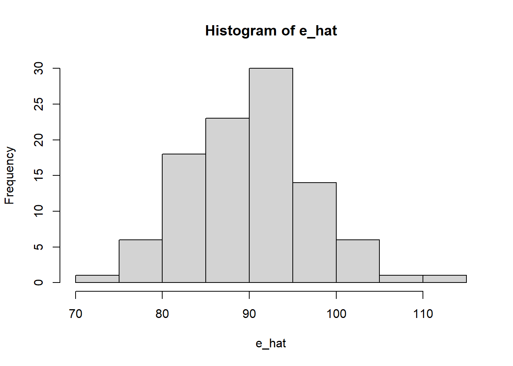
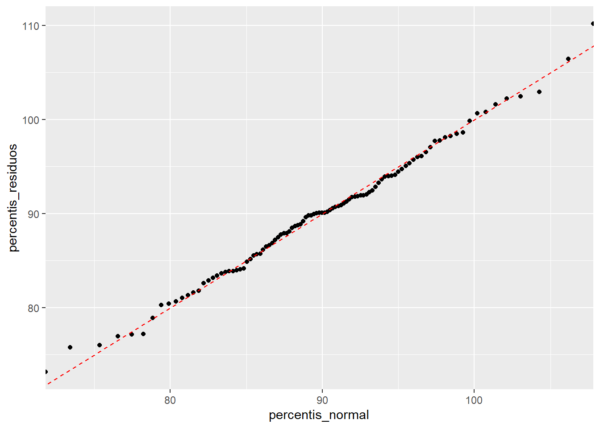

library(tidyverse)
e1 = rnorm(100, mean=50 , sd=5)
e2 = rnorm(100, mean=40 , sd=4)
e_hat = e1 + e2
hist(e_hat)
Ajustando curvas ao invés de linhas
Frequently, we wish to test multiple hypotheses about the underlying parameters \(\beta_0, \beta_1, \cdots, \beta_k\). (Wooldridge 2020, 139)
We already know how to test whether a particular variable has no partial effect on the dependent variable: use the \(t\) statistic. Now, we want to test whether a group of variables has no effect on the dependent variable. More precisely, the null hypothesis is that a set of variables has no effect on \(y\), once another set of variables has been controlled. (Wooldridge 2020, 139)
Suppose the following model:
\[ \log (salary) = \beta_0 + \beta_1 years + \beta_2 gamesyr + \beta_3 bavg + \beta_4 hrunsyr + \beta_5 rbisyr + u \]
In terms of the paramters of the model, the null hypothesis is stated as \(H_0: \beta_3 = 0, \beta_4 = 0, \beta_5 = 0\). (Wooldridge 2020, 139)
This is an example of a set of multiple restrictions because we are putting more than one restriction on the parameters […]. […]. A test of multiple restrictions is called a multiple hypotheses test or a joint hypotheses test. (Wooldridge 2020, 139)
How should we proceed in testing (4.29) [the null hypothesis] against (4.30) [the alternative hypothesis]? It is tempting to test (4.29) by using the \(t\) statistics on the variables bavg, hrunsyr, and rbisyr to determine whether each variable is individually significant. This option is not appropriate. A particular \(t\) statistic tests a hypothesis that puts no restrictions on the other parameters. Besides, we would have three outcomes to contend with – one for each \(t\) statistic. (Wooldridge 2020, 140)
Knowing the sum of squared residuals in (4.31) [the estimated model] tells us nothing about the truth of the hypothesis in (4.29). However, the factor that will tell us something is how much the SSR increases when we drop the variables bavg, hrunsyr, and rbisyr from the model. Remember that, because the OLS estimates are chosen to minimize the sum of squared residuals, the SSR always increases when variables are dropped from the model; this is an algebraic fact. The question is whether this increase is large enough, realtive to the SSR in the model with all the variables, to warrant rejecting the null hypothesis. (Wooldridge 2020, 140)
The \(F\) statistic (or \(F\) ratio) is defined by
\[ F \equiv \dfrac{ (SSR_r - SSR_{ur}) / q}{ SSR_{ur} / (n - k - 1) }, \]
where the \(SSR_r\) is the sum of squared residuals from the restricted model and \(SSR_{ur}\) is the sum of squared residuals from the unrestricted model.
I add, also, that \(q\) is the number of removed covariates (i.e., those we believe that the effect on \(y\) is zero when controlling for the other covariates). \(q\) can also be called the numerator degrees of freedom = \(df_r - df_{ur}\).
To use the \(F\) statistic, we must know its sampling distribution under the null in order to choose critical values and rejection rules. It can be shown that, under \(H_0\) (and assuming the CLM assumptions hold), \(F\) is distributed as an \(F\) random variable with \((q, n - k - 1)\) degrees of freedom. We write this as
\[ F \sim F_{q, n - k - 1}. \]
The \(F\) statistic is often useful for testing exclusion of a group of variables when the variables in the group are highly correlated. For example, suppose we want to test whether firm performance affects the salaries of chief executive officers. There are many ways to measure firm performance, and it probably it would not be clear ahead of time which measures would be most important. Because measures of firm performance are likely to be highly correlated, hoping to find individually significant measures might be asking too much due to multicollinearity. But an F test can be used to determine whether, as a group, the firm performance variables affect salary. (Wooldridge 2020, 144)
What happens if we apply the \(F\) statistic to the case of testing significance of a single independent variable? This case is certainly not ruled out by the previous development. […]. The question, then, is: do we have two separate ways of testing hypotheses about a ingle coefficient? The answer is no. It can be shown that the \(F\) statistic for testing exclusion of a single variable is equal to the square of the corresponding \(t\) statistic. Because \(t^2_{n - k - 1}\) has an \(F_{1, n - k - 1}\) distribution, the two approaches lead to exactly the same outcome, provided that the alternative is two-sided. (Wooldridge 2020, 144)
Of course, we can also compute the \(F\) statistic using \(R^2\):
\[ F = \dfrac{ (R^2_{ur} - R^2_r) / q }{ (1 - R^2_{ur}) / (n - k - 1) } = \dfrac{ (R^2_{ur} - R^2_r) / q }{ (1 - R^2_{ur}) / df_{ur} } \]
Using the F statistic, we can say things are jointly significant or jointly insignificant.
We will discover that everything expected to happen, does happen. When variables are rescaled, the coefficients, standard errors, confidence intervals, \(t\) statistics, and \(F\) statistics change in ways that preserve all measured effects and testing outcomes.
Sometimes, in econometric applications, a key variable is measured on a scale that is difficult to interpret. Labor economists often include test scores in wage equations, and the scale on which these tests are scored is often arbitrary and not easy to interpret (at least for economists!). In almost all cases, we are interested in how a particular individual’s score compares with the population. Thus, instead of asking about the effect of hourly wage if, say, a test score is 10 points higher, it makes more sense to ask what happens when the test score is one standard deviation higher.
[…]
Sometimes, it is useful to obtain regression results when all variables involved, the dependent as well as all the independent variables, have been standardized. A variable is standardized in the sample by subtracting off its mean and dividing by its standard deviation (see Math Refresher C). This means that we compute the \(z-score\) for every variable in the sample. Then, we run a regression using the z-scores. (Wooldridge 2020, 184)
\[ y_i = \hat{\beta_0} + \hat{\beta_1}x_{i1} + \hat{\beta_2}x_{i2} + \cdots + \hat{\beta_k}x_{ik} + \hat{u_i} \]
Then we substract the mean:
\[ y_i - \bar{y} = \hat{\beta_1}(x_{i1} - \bar{x_1}) + \hat{\beta_2}(x_{i2} - \bar{x_2}) + \cdots + \hat{\beta_k}(x_{ik} - \bar{x_k}) + \hat{u_i} \]
This is the mean-centered regression equation, where every term has mean 0. By now, each term has its own units – \(y\) might be in dollars, \(x_1\) might be in years, etc. We can’t compare magnitudes yet. We divide the entire equation by \(\hat{\sigma}_y\) to express everything in standard-deviation units of \(y\):
\[ \dfrac{y_i - \bar{y}}{\hat{\sigma}_y} = \hat{\beta_1} \dfrac{(x_{i1} - \bar{x_1})}{\hat{\sigma}_y} + \hat{\beta_2} \dfrac{(x_{i2} - \bar{x_2})}{\hat{\sigma}_y} + \cdots + \hat{\beta_k} \dfrac{(x_{ik} - \bar{x_k})}{\hat{\sigma}_y} + \dfrac{\hat{u_i}}{\hat{\sigma}_y} \]
This makes the left-hand side a standardized dependent variable, but \(x\)’s are still on their original scales. Now we multiply and divide by \(\hat{\sigma}_{x_{j}}\):
\[ \dfrac{y_i - \bar{y}}{\hat{\sigma}_y} = \dfrac{\hat{\sigma}_1}{\hat{\sigma}_y} \hat{\beta_1} \dfrac{(x_{i1} - \bar{x_1})}{\hat{\sigma}_1} + \dfrac{\hat{\sigma}_2}{\hat{\sigma}_y} \hat{\beta_2} \dfrac{(x_{i2} - \bar{x_2})}{\hat{\sigma}_2} + \cdots + \dfrac{\hat{\sigma}_k}{\hat{\sigma}_y} \hat{\beta_k} \dfrac{(x_{ik} - \bar{x_k})}{\hat{\sigma}_k} + \dfrac{\hat{u_i}}{\hat{\sigma}_y} \]
This is simply the original coefficient, \(\hat{\beta}_1\), multiplied by the ratio of the standard deviation of \(x_1\) to the standard deviation of \(y\). The intercept has dropped out altogether. (Wooldridge 2020, 184)
We can write that as:
\[ z_y = \hat{b}_1 z_1 + \hat{b}_2 z_2 + \cdots + \hat{b}_k z_k + error, \]
where \(z_y\) denotes the z-score of \(y\), \(z_1\) is the z-score of \(x_1\), and so on. The new coefficients are
\[ \hat{b}_j = \dfrac{\hat{\sigma}_j}{\hat{\sigma}_y} \hat{\beta}_j \text{ for } j = 1, ..., k \]
Suppose the estimated model:
\[ \hat{\log (price)} = 9.23 - .718 \log (nox) + .306 rooms \]
Thus, when nox increases by 1%, price falls by .718%, holding rooms fixed. When rooms increases by one, price increases by approximately 100(.306) = 30.6%.
The estimate that one more room increases price by about 30.6% turns out to be somewhat inaccurate for this application. The approximation error occurs because, as the change in \(\log (y)\) becomes larger and larger, the approximation \(\% \delta y \approx 100 \cdot \Delta \log (y)\) becomes more and more inaccurate. Fortunately, a simple calculation is available to compute the exact percantage change.
To describe the procedure, we consider the general estimated model
\[ \hat{\log (y)} = \hat{\beta_0} + \hat{\beta_1} \log (x_1) + \hat{\beta_2} x_2 \]
(Adding additional independent variables does not change the procedure.) Now, fixing \(x_1\), we have \(\Delta \log (y) = \hat{\beta_2} \Delta x_2\). Using simple algebraic properties of the exponential and logarithmic funcions gives the exact percentage change in the predicted \(y\) as
\[ \% \Delta \hat{y} = 100 \cdot [\exp{(\hat{\beta_2} \Delta x_2)} - 1] \]
[…]
Applied to the housing price example with \(x_2 = rooms\) and \(\hat{\beta_2} = .306\), \(\% \Delta \hat{price} = 100[\exp{(.306)} - 1] = 35.8\%\), which is notably larger than the approximate percentage change, \(30.6\%\), obtained directly from (6.7). (Wooldridge 2020, 186)
We have seen that using natural logs leads to coefficients with appealing interpretations, and we can be ignorant about the units of measurement of variables appearing in logarithmic form because the slope coefficients are invariant to rescaling. There are several other reasons logs are used so much in applied work. First, when \(y > 0\), models using \(\log (y)\) as the dependent variable often satisfy the CLM assumptions more closely than models using the level of \(y\). Strictly positive variables often have conditional distributions that are heteroskedastic or skewed; taking the log can mitigate, if not eliminate, both problems.
Another potential benefit of using logs is that taking the log of a variable often narrows its range. This is particularly true of variables that can be large monetary values, such as firms’ annual sales or baseball players’ salaries. Population variables also tend to vary widely. Narrowing the range of the dependent and independent variables can make OLS estimates less sensitive to outlying (or extreme) values; we take up the issue of outlying observations in Chapter 9. (Wooldridge 2020, 187)
Variables that are measured in years – such as education, experience, tenure, age, and so on – usually appear in their original form. A variable that is a proportion or a percentage – such as the unemployment rate, the participation rate in a pension plan, the percentage of students passing a standardized exam, and the arrest rate on reported crimes – can appear in either original or logarithmic form, although there is a tendency to use them in level forms. This is because any regression coefficients involving the original variable – whether it is the dependent or independent variable – will have a percentage point change interpretation. […]. If we use, say, \(\log (unem)\) in a regression, where unem is the percentage of unemployed individuals, we must be very careful to distinguish between a percentage point change and a percentage change. Remember, if unem goes from 8 to 9, this is an increase of one percentage point, but a 12.5% increase from the initial unemployment leel. Using the log means that we are looking at the percentage change in the unemployment rate […]. (Wooldridge 2020, 187–88)
In the simples case, \(y\) depends on a single observed factor \(x\), but it does so in a quadratic fashion:
\[ y = \beta_0 + \beta_1 x + \beta_2 x^2 + u \]
[…]
It is important to remember that \(\beta_1\) does not measure the change in \(y\) with respect to \(x\); it makes no sense to hold \(x^2\) fixed while changing \(x\). If we write the estimated equation as
\[ \hat{y} = \hat{\beta_0} + \hat{\beta_1} x + \hat{\beta_2} x^2, \]
then we have the approximation
\[ \Delta \hat{y} \approx (\hat{\beta_1} + 2 \hat{\beta_2} x) \Delta x, \text{ so } \Delta \hat{y} / \Delta x \approx \hat{\beta_1} + 2 \hat{\beta_2} x \]
This says that the slope of the relationship between \(x\) and \(y\) depends on the value of \(x\); the estimated slope is \(\hat{\beta_1} + 2 \hat{\beta_2} x\). If we plug in \(x = 0\), we see that \(\hat{\beta_1}\) can be interpreted as the approximate slope in going from \(x = 0\) to \(x = 1\). After that, the second term, \(2 \hat{\beta_2} x\), must be accounted for.
In many applications, \(\hat{\beta_1}\) is positive and \(\hat{\beta_2}\) is negative. For example, using the wage data in WAGE1, we obtain
\[ \hat{wage} = 3.73 + .298 \cdot exper - 0.0061 \cdot exper^2 \]
This estimated equation implies that exper has a diminishing effect on wage. The first year of experience is worth roughtly 30c per hour. The second year of experience is worth less. (Wooldridge 2020, 188–89)
This is exactly the same idea of interactive terms (precisely because it is the same thing kk).
Sometimes, it is natural for the partial effect, elasticity, or semi-elasticity of the dependent variable with respect to an explanatory variable to depend on the magnitude of yet another explanatory variable. (Wooldridge 2020, 192)
The parameters on the original variables can be tricky to interpret when we include an interaction term. For example, in the previous housing price equation, equation (6.17) shows that \(\beta_2\) is the effect of bdrms on price for a home with zero square feet! This effect is clearly not of much interest. Instead, we must be careful to put interesting values of sqrft, such as the mean or median values in the sample, into the estimated version of equation (6.17).
Often, it is useful to reparameterize a model so that the coefficients on the original variables have an interesting meaning. Consider a model with two explanatory variables and an interaction:
\[ y = \beta_0 + \beta_1 x_1 + \beta_2 x_2 + \beta_3 x_1 x_2 + u. \]
As just mentioned, \(\beta_2\) is the partial effect of \(x_2\) on \(y\) when \(x_1 = 0\). Often, this is not of interest. Instead, we can reparameterize the model as
\[ y = \alpha_0 + \delta x_1 + \delta_2 x_2 + \beta_3 (x_1 - \mu_1)(x_2 - \mu_2) + u, \]
where \(\mu_1\) is the population mean of \(x_1\) and \(\mu_2\) is the population mean of \(x_2\). We can easily see that now the coefficient on \(x^2\), \(\delta_2\), is the partial effect of \(x_2\) on \(y\) at the mean value of \(x_1\). (By multiplying out the interaction in the second equation and comparing the coefficients, we can easily show that \(\delta_2 = \beta_2 + \beta_3 \mu_1\). The parameter \(\delta_1\) has similar interpretation.) Therefore, if we subtract the means of the variables – in practice, these would typically be the sample means – before creating the interaction term, the coefficients on the original variables have a useful interpretation.
Nothing about the classical linear model assumptions requires that \(R^2\) be above any particular value; \(R^2\) is simply an estimate of how much variation in \(y\) is explained by \(x_1, x_2, ..., x_k\) in the population. We have seen several regressions that have had pretty small R-squareds. Although this means that we have not accounted for several factors that affect \(y\), this does not mean that the factors in \(u\) are correlated with the independent variables. The zero conditional mean assumption MLR.4 is what determines whether we get unbiased estimators of the ceteris paribus effects of the independent variables, and the size of the R-squared has no direct bearing on this.
A small R-squared does imply that the error variance is large relative to the variance of \(y\), which means we may have a hard time precisely estimating the \(\beta_j\). But temember, we say in section 3.4 that a large error variance can be offset by a large sample size: if we have enought data, we may be able to precisely estimate the partial effects even though we have not controlled for many unobserved factors. Whether or not we can get precise enough estimates depends on the application. (Wooldridge 2020, 195)
The previous examples [where we add too many variables to the regression model] are what can be called over controlling for factors in multiple regression. Often this results from nervousness about potential biases that might arise by leaving out an important explanatory variable. But it is important to remember the ceteris paribus nature of multiple regression. In some cases, it makes no sense to hold some factors fixed precisely because they should be allowed to change when a policy variable changes. (Wooldridge 2020, 200)
We have just seen some examples of where certain independent variables should not be included in a regression model, even though they are correlated with the dependent variable. From Chapter 3, we know that adding a new independent variable to a regression can exacerbate the multicollinearity problem. On the other hand, because we are taking something out of the error term, adding a variable generally reduces the error variance. Generally, we cannot know which effect will dominate.
However, there is one case that is clear: we should always include independent variables that affect \(y\) and are uncorrelated with all of the independent variables of interest. Why? Because adding such a variable does not induce multicollinearity in the population (and therefore multicollinearity in the sample should be negligible), but it will reduce the error variance. In larger sample sizes, the standard errors of all OLS estimators will be reduced. (Wooldridge 2020, 200)
A homocedasticidade é frequentemente chamada de ML.5. Não se trata de um pressuposto de identificação (isto é, uma estratégia de obter os \(\beta\)’s verdadeiros do processo gerador de dados). Os pressupostos de identificação são:
ML.1 – forma funcional ML.2 – generalidade do processo gerador de dados (i.e., IID) ML.3 – matemático (\(X^TX\) é invertível) ML.4 – exogeneidade
Supor homocedasticidade, ML.5, facilita o cálculo dos erros; fica mais fácil de calcular. Mas isso não é uma necessidade, então não é um pressuposto.
A gente normalmente faz a teoria da regressão assumindo que a amostra é muito grande; não é raro, no entanto, que a gente colete nossos próprios dados, \(n\) pequeno é muito comum. O problema é que o Teorema do Limite Central diz o seguinte:
\[ \text{TCL (informalmente): } \hat{\beta} \overset{d}{\longrightarrow} \mathcal{N}(\beta, \text{Var}(\hat{\beta})) \]
Dizer que “converge em distribuição” significa que cada amostra precisa ter \(n\) grande, i.e., tendendo a infinito, ficando infinitamente melhor. No caso de \(n\) pequeno, o Teorema do Limite Central ainda não opera. Isso significa que se você fizer infinitas amostras de tamanho 10, a sua distribuição não terá, muito provavelmente, a forma de uma distribuição normal.
Essa não é a versão formal do TCL. Seria mais correto dizer o seguinte:
Teorema (TCL clássico).
Sejam \(X_1, X_2, \ldots, X_n\) i.i.d. com \(\mathbb{E}[X_i]=\mu\) e \(\operatorname{Var}(X_i)=\sigma^2<\infty\).
Defina \(\bar X_n=\frac{1}{n}\sum_{i=1}^n X_i\). Então
\[ \frac{\sqrt{n}\,(\bar X_n-\mu)}{\sigma}\ \xrightarrow{d}\ \mathcal{N}(0,1), \]
isto é,
\[ \sqrt{n}\,(\bar X_n-\mu)\ \xrightarrow{d}\ \mathcal{N}(0,\sigma^2). \]
Corolário (normalidade assintótica de estimadores).
Um estimador \((\hat\theta_n)\) de \((\theta\)\) é assintoticamente normal se existe \((\Sigma)\) (escala ou matriz) tal que
\[ \sqrt{n}\,(\hat\theta_n-\theta)\ \xrightarrow{d}\ \mathcal{N}(0,\Sigma). \]
Equivalentemente, para \(n\) grande, \(\hat\theta_n \approx \mathcal{N}\!\big(\theta,\ \Sigma/n\big)\).
Remark. Observação. A seta \(\xrightarrow{d}\) indica convergência em distribuição.
Em outras palavras, a distribuição da média amostral (devidamente centrada e normalizada) converge em distribuição para uma normal, independentemente da distribuição original das variáveis \(X_i\), desde que possuam variância finita.
O fato é: o ML.6 supõe a normalidade dos erros individuais:
\[ \begin{align*} y_i &= \beta_0 + \beta_1 x_i + \epsilon_i \\ \epsilon_i &\sim \mathcal{N}(0, \sigma^2) \end{align*} \]
O suposto da normalidade é uma hipótese auxiliar, que facilita o cálculo dos erros em amostras pequenas. E note: isso também assume homocedasticidade, com o mesmo \(\sigma^2 \ \forall \ \epsilon\).
Lição de probabilidade:
Se \(W \sim \mathcal{N}(\mu, \sigma^2)\), então \((a + bW) \sim \mathcal{N}(a + b \mu, b^2 \sigma^2)\). Isto é, a forma continua sendo a de uma distribuição normal.
Naturalmente, isso vem dos seguintes fatos:
\(\mathbb{E}[a + bW] = \mathbb{E}[a] + \mathbb{E}[bW] = a + b \mathbb{E}[W]\)
\(\operatorname{Var} (a + bW) = \operatorname{Var} (bW) = b^2 \operatorname{Var}(W)\)
Sabemos que:
\[ \hat{\beta} = \beta + (X^TX)^{-1} X^T \epsilon, \]
e que \((X^TX)^{-1} X^T \epsilon\) não é exatamente zero em amostras finitas. \(\hat{\beta}\) é o beta amostral, \(\beta\) é o parâmetro verdadeiro (um escalar), e \(X\) é constante numa amostra já coletada (de fato, depois que você já coletou, esse dado é fixo). \(\epsilon\), por definição, é puramente aleatório e o causador de qualquer variação (afinal, \(X\) é dado).
Ora, essa fórmula é novamente a soma de duas constantes, sendo uma delas multiplicada por uma variável. Portanto, se assumimos que \(\epsilon\) tem distribuição normal, então temos garantia, mesmo na amostra pequena, que a distribuição de \(\hat{\beta}\) será normal.
Bom, ajustado um modelo, podemos olhar os resíduos:
library(tidyverse)
e1 = rnorm(100, mean=50 , sd=5)
e2 = rnorm(100, mean=40 , sd=4)
e_hat = e1 + e2
hist(e_hat)
Outra maneira é olhando o Q-Q Plot (gráfico de quantil por quantil):
percentis_residuos = quantile(
e_hat,
probs=seq(0, 1, 0.01)
)
percentis_normal = qnorm(
seq(0, 1, 0.01),
mean = mean(e_hat),
sd = sd(e_hat)
)
d = tibble(percentis_residuos, percentis_normal)
d %>%
ggplot(aes(x = percentis_normal, y = percentis_residuos)) +
geom_point() +
geom_abline(intercept = 0, slope = 1, color = "red", linetype = "dashed")
A assumption de normalidade de resíduos só é necessária no caso de amostras pequenas, quando o TCL não se aplica. De fato, para amostras pequenas você não terá certeza de que o parâmetro estimado se distribui de forma normal em torno do parâmetro populacional, porque o TCL ainda não operou; para amostras grandes, vale o TCL e tanto faz a forma com que os erros se distribuem.
Há várias estatísticas que medem a qualidade geral do ajuste do modelo. O teste F, na verdade, é a análise de variância – algo que, aliás, antecede a regressão. De saída, então, vamos falar de análise de variância.
De onde vem a maior parte da variação: entre grupos ou dentro dos grupos? É essa pergunta que o teste-F responde.
\[ \operatorname{F} = \dfrac{ \operatorname{Variação entre grupos} }{ \operatorname{Variação dentro dos grupos} } \]
\[ \operatorname{F} = \dfrac{ \dfrac{ \sum^G_{g=1} ( \bar{X}_g - \bar{X} )^2 }{ G - 1 } } { \dfrac{\sum^G_{g = 1} [\sum_{i \in g} (X_{ig} - \bar{X}_g)^2]}{ n - G} }, \]
onde:
Trata-se de uma razão entre variâncias. Se a maior parte da variação é entre os grupos, a parte de cima será maior; se a maior parte da variação é dentro dos grupos, então a parte de baixo será maior.
Quando dizemos que algo é um teste estatístico, isso significa que queremos diferenciar ruído amostral de sinal sistemático. Quando estávamos calculando a variância dos \(\hat{\beta}\)’s, sabíamos que havia uma margem (um ruído) de flutuação amostral resumida pela margem de erro. O teste-F calculado dessa maneira não nos diz nada sobre incerteza. Há uma imprecisão relacionada ao fato de que eu estou calculando médias que não são sempre as mesmas, variando (pelo menos um pouco) conforme a amostra. Neste ponto, \(F\) é apenas um número, que é uma razão. Precisamos, portanto, situar essa estatística numa distribuição.
Vamos nos lembrar do teste \(t\):
\[ t = \dfrac{ \operatorname{valor empírico} - H_0}{ \operatorname{erro-padrão} }. \]
Com isso, poderíamos fazer:
\[ \begin{align*} t_m &= \dfrac{\bar{X}_m - \bar{X}}{\text{erro-padrão das mulheres}} \\ t_h &= \dfrac{\bar{X}_h - \bar{X}}{\text{erro-padrão dos homens}} \end{align*} \]
Isso retorna dois números, e não apenas um. Podemos testar, de fato, a hipótese de que as mulheres são diferentes da média normal, que os homens são diferentes da média normal, ou ainda que mulheres são diferentes de homens. O teste \(F\), no entanto, nos permite fazer um teste só.
Lição de Probabilidade 1: A soma de variáveis distribuídas como uma normal também é uma distribuição normal
Se \(W_1 \sim \mathcal{N}(\mu_1, \sigma^2_1)\) e \(W_2 \sim \mathcal{N}(\mu_2, \sigma^2_2)\), então \(W_1 + W_2 \sim \mathcal{N}(\mu_1 + \mu_2, \sigma^2_1 + \sigma^2_2 + 2 \operatorname{Cov}(W_1, W_2))\).
Pelo TCL, as médias amostrais se distribuem como uma normal em torno da média populacional:
\[ \begin{align*} \bar{X_1} &\sim \mathcal{N}(.) \\ \bar{X_2} &\sim \mathcal{N}(.) \\ \bar{X_3} &\sim \mathcal{N}(.) \\ &\cdots \end{align*} \]
Então:
\[ \dfrac{ \bar{X_1} - \bar{X} }{ \frac{S_1}{ \sqrt{n_1} } } + \dfrac{ \bar{X_2} - \bar{X} }{ \frac{S_2}{ \sqrt{n_2} } } + \cdots \sim \mathcal{N}(.) \]
Lição de Probabilidade 2: O quadrado de uma distribuição normal padrão é uma distribuição \(\chi^2\) (qui-quadrado) com um grau de liberdade (\(\chi^2_1\)). Logo, se \(Z \sim \mathcal{N}(0, 1)\) (com valores positivos e negativos), a distribuição \(\chi^2_1\) tem apenas valores positivos e com alta massa de probabilidade nos arredores do zero.
Veja: Para sortear um \(\chi^2_1\), basta sortear um número de uma distribuição normal e elevá-lo ao quadrado. Em outras palavras, \(Z^2 \sim \chi^2_1\).
Lição de Probabilidade 3: A soma de uma distribuição \(\chi^2\) com \(m\) graus de liberdade e outra distribuição \(\chi^2\) com \(n\) graus de liberdade será uma distribuição \(\chi^2\) com \(m + n\) graus de liberdade.
Se \(A \sim \chi^2_1\) e \(B \sim \chi^2_1\), então \(A + B \sim \chi^2_2\).
Bom, então tínhamos parado neste ponto:
\[ \dfrac{ \bar{X_1} - \bar{X} }{ \frac{S_1}{ \sqrt{n_1} } } + \dfrac{ \bar{X_2} - \bar{X} }{ \frac{S_2}{ \sqrt{n_2} } } + \cdots \sim \mathcal{N}(.) \]
Se elevarmos tudo ao quadrado, teremos:
\[ \left[ \dfrac{ \bar{X_1} - \bar{X} }{ \frac{S_1}{ \sqrt{n_1} } } \right]^2 + \left[ \dfrac{ \bar{X_2} - \bar{X} }{ \frac{S_2}{ \sqrt{n_2} } } \right]^2 + \cdots \sim \chi^2_G \]
Sabemos que \(\bar{X}_g \sim \mathcal{N}(.)\). Então, da fração que define \(F\), sabemos que:
\[ \dfrac{ \sum^G_{g=1} ( \bar{X}_g - \bar{X} )^2 }{ G - 1 } \sim \chi^2_{G-1} \]
\[ \dfrac{\sum^G_{g = 1} [\sum_{i \in g} (X_{ig} - \bar{X}_g)^2]}{ n - G} \sim \chi^2_{n - G} \]
Lição de Probabilidade 4: a distribuição resultante das divisões de duas distribuições Qui-Quadrado é chamada distribuição \(F\) de Fisher, \(F(a, b)\), onde \(a\) é o número de graus de liberdade do numerador e \(b\) é o número de graus de liberdade do denominador.
Variância dos grupos em torno da média global dividido pela variância interna dos grupos. Um valor F alto, por exemplo, de 7.8, quer dizer que a variância dos grupos em relação à média global é 7.8 vezes maior do que a variância interna dos grupos. Isso significa que os grupos são muito informativos – afinal, a variância dentro dos grupos é pequena, e entre grupos é grande.
No entanto, voltemos à fórmula do teste F:
\[ \operatorname{F} = \dfrac{ \dfrac{ \sum^G_{g=1} ( \bar{X}_g - \bar{X} )^2 }{ G - 1 } } { \dfrac{\sum^G_{g = 1} [\sum_{i \in g} (X_{ig} - \bar{X}_g)^2]}{ n - G} }, \]
De saída, há uma sensação estranha. Onde está o desvio-padrão? Afinal, só podemos dizer que se trata de uma distribuição \(\chi^2\) quando observamos a soma de variáveis aleatórias com distribuição normal padrão. O que acontece é o seguinte: tanto o denominador quanto o numerador são divididos pelo mesmo desvio-padrão:
\[ \begin{align*} \text{variância entre grupos} &= \sum^G_{g=1} \left( \dfrac{\bar{X}_g - \bar{X}}{\operatorname{se}} \right)^2 \\ \text{variância dentro dos grupos} &= \sum^G_{g=1} \sum_{i \in g} \left( \dfrac{X_{ig} - \bar{X}_g}{\operatorname{se}} \right)^2 \end{align*} \]
A divisão pelo mesmo desvio-padrão diz respeito à hipótese nula, ou a hipótese de homogeneidade das variâncias – isto é, todos os grupos têm a mesma variância populacional. Sob essa hipótese, o erro padrão que aparece em ambos os termos vem da mesma estimativa de \(\sigma\), e é isso que justifica usar o mesmo denominador. Com efeito, podemos dizer com tranquilidade que tanto o numerador quanto o denominador seguem uma distribuição \(\chi^2\), sendo o primeiro \(\chi^2_{G-1}\) e o segundo \(\chi^2_{N-G}\).
Um ponto importante é que o teste F não é exatamente uma divisão de \(\chi^2\); na verdade, é uma divisão de \(\chi^2\) tendo cada um dividido pelos seus respectivos graus de liberdade. Daí a fórmula é:
\[ \operatorname{F} = \dfrac{ \dfrac{ \sum^G_{g=1} ( \bar{X}_g - \bar{X} )^2 }{ G - 1 } } { \dfrac{\sum^G_{g = 1} \sum_{i \in g} (X_{ig} - \bar{X}_g)^2}{ n - G} } \sim \operatorname{F}(G-1, N-G) \]